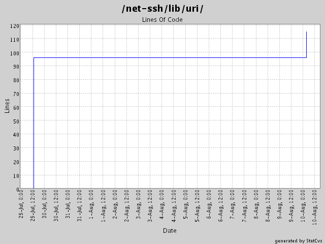

Generated by StatCvs v0.1.3
Summary Period: 2004-07-29 to 2004-08-10

Total Lines Of Code:
115 (2004-08-17)
| User | Changes | Lines of code | Lines each change |
|---|---|---|---|
| minam | 4 (100.0%) | 115 (100.0%) | 28 |
| Sum | 4 (100%) | 115 (100%) | 28 |
|
minam 8/10/04 3:21 AM |
Changed buffer implementation and refactored it to a new module. Added support for tunneling via HTTP proxy. |
| 38 lines of code changed in: net-ssh/lib/uri: open-sftp.rb (+19), sftp.rb (+19) | |
|
minam 7/29/04 1:27 PM |
Gabriele Renzi's suggestion of an open-uri interface for SFTP. This required some new methods be added to the SFTP interfaces (attributes, and size). Also modified the SFTP 'get' interfaces to support the specification of a 'chunk size' and a progress callback. |
| 77 lines of code changed in: net-ssh/lib/uri: open-sftp.rb (new 34), sftp.rb (new 43) | |

Generated by StatCvs v0.1.3